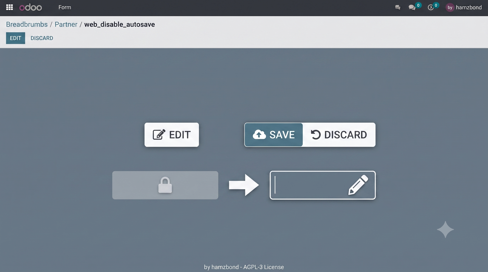
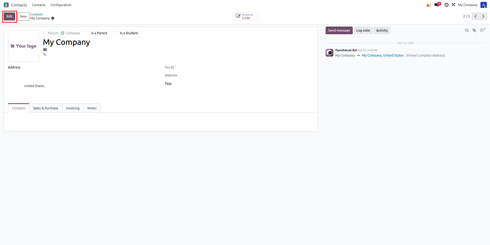
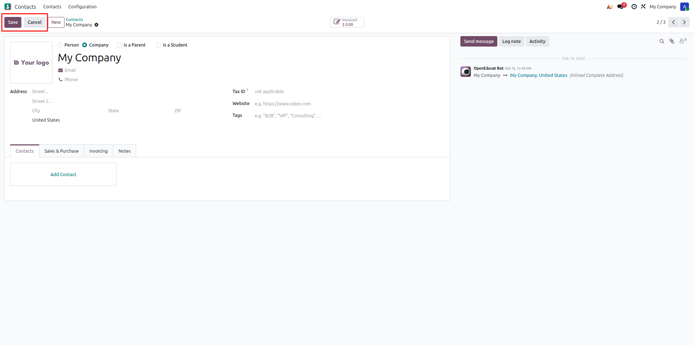

Classic Edit Button
Makes form views open in readonly mode by default and adds an Edit button to switch to edit mode. Restores the explicit Save and Cancel workflow, disabling standard auto-save on field blur to keep your data safe.

What this module does
Restores the classic Edit/Save/Cancel workflow to all Odoo form views globally. Existing records open safely in readonly mode, requiring users to explicitly click Edit before modifying fields. This effectively eliminates risky inline auto-saving on focus loss.
How it works
The module patches the standard Odoo form controller and templates to enforce a readonly-first experience across all form views.
- Open any existing document — it automatically loads in a locked, readonly mode.
- Click the prominent Edit button in the control panel to open input forms.
- Make modifications safely across any fields without triggering real-time background saves.
- Click Save to commit data permanently, or Cancel to revert changes back to readonly.
- Creating new entries remains completely native — allowing immediate typing without manual unlocks.
- When leaving an active edit session with unsaved changes (breadcrumb navigation, closing the tab, refreshing), the module never auto-saves silently — it asks first, just like classic pre-autosave Odoo.
Screenshots


Changelog
- Fix: dialogs whose view defines its own custom
<footer>(e.g. the "My Preferences" popup, with its "Update Preferences"/"Discard" buttons) were stuck permanently readonly with no way to edit, because Odoo never renders the default button slot — where this module's Edit button lives — alongside a custom footer unless the arch opts in withreplace="0". Such dialogs now open directly in edit mode instead, relying on their own Save-style button to persist changes. Regular (non-dialog) form views are unaffected and keep the existing readonly-by-default + Edit button flow.
- Fix: leaving the form (browser refresh/close, or navigating away in-app) while in edit mode with unsaved changes used to silently auto-save them (Odoo's modern urgentSave/beforeLeave auto-save behavior), defeating the module's purpose. Unsaved changes are no longer persisted behind the user's back.
- Feature: navigating away in-app (breadcrumb, opening another record, etc.) with unsaved changes now shows a classic "Unsaved changes" confirmation dialog (Discard changes / Stay on this page), instead of auto-saving or silently discarding.
- Feature: refreshing/closing the browser tab with unsaved changes now triggers the browser's native "leave site?" prompt instead of silently auto-saving.
- Also disabled the auto-save on tab visibility change (switching tabs/apps), for the same reason.
- Fix:
beforeLeave()ignored theforceLeaveflag, so the framework's "leave without saving" requests (e.g. after choosing Discard on the save-error dialog) could still trigger an unwanted save attempt. Now delegates to coreFormController.beforeLeave()soforceLeaveis respected. - Fix:
saveButtonClicked()no longer wrapped the save inexecuteButtonCallback, losing Odoo's built-in double-submit protection (buttons stayed enabled during save, so a fast double-click could fire two concurrent save requests). Restored. - Fix:
beforeLeave()andonPagerUpdate()calledonSaveError()withoutleaving=true, so save errors while navigating away or paging skipped Odoo's recovery dialog (Discard/Stay) and just threw the raw error instead. Fixed to match core behavior.
Helping businesses work smarter with tailored Odoo solutions. We deliver custom modules, integrations, and workflow improvements designed for your needs.